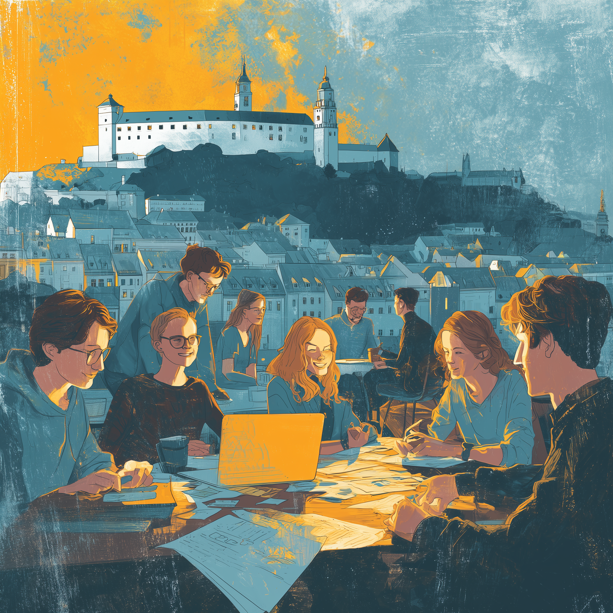

Diskusia o budúcnosti Slovenska
Slovensko,
ako ho vidia tí, čo ho riadili.
Tri perspektívy z prvej ruky — diplomacia, samospráva, zdravotníctvo.
Registrovať sa
Bezplatná účasť · Po hlavnej časti presun do okolia na neformálny pokec
Kto už je registrovaný →
